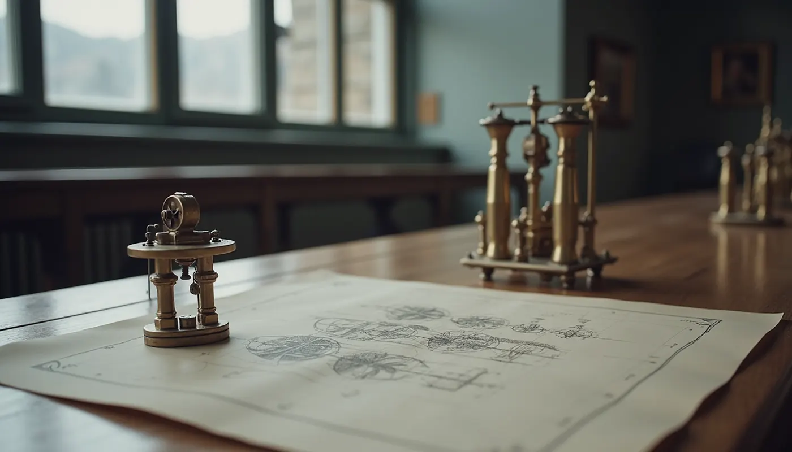

01
Един ход за всички
Колелата са в зацепване с общото колело, затова зъбите им минават покрай пружинките със същата скорост — един зъб на удар, независимо колко зъба има колелото.
Факултет по индустриални технологии · ТУ–София
Катедра „Теория на механизмите и машините“. Четири зъбни колела с различен брой зъби се въртят от едно общо колело. Всеки зъб, минал покрай пружинката, свири нота — а зъбните колела са урок по предавателно отношение.
Кликнете върху зъб, за да го заглушите.
Инструмент № 1
Пробелът пуска и спира. Звукът се създава в браузъра ви (Web Audio) и започва само след натискане на „Пусни“.
01
Колелата са в зацепване с общото колело, затова зъбите им минават покрай пружинките със същата скорост — един зъб на удар, независимо колко зъба има колелото.
02
Колело с 9 зъба повтаря фигурата си на всеки 9 удара, колело с 16 — на всеки 16. Ъгловата му скорост е ω₂ = ω₁ · z₁ / z₂: по-малкото колело се върти по-бързо.
03
Всички колела са в началното си положение едновременно едва след НОК на броя им зъби. Затова четири къси фигури се разминават и образуват дълга, която не се повтаря скоро.
Блок 4, ет. 5, каб. 4536
02 965 2770 · nickn@tu-sofia.bg

Корените на дисциплината са от 1945 г. През юни 1974 г. катедрата става самостоятелна. Основател е проф. Михаил Константинов (1921–1991). Към историята →
Наука за движението на механизмите и машините: как се свързват звената, за да превърнат едно движение в друго, и как инженерите проектират такива системи.
Катедрата води 10 задължителни дисциплини, две от които в магистърски програми, и предлага две избираеми. Тематичните области са структура и кинематика, сили и динамика, проектиране и синтез, приложение и магистърска специализация. Конкретните дисциплини са посочени в учебните планове.
Навсякъде, където нещо се движи по зададен закон: роботика, машиностроене, автоматизация, мехатроника, проектиране на двигатели, предавки и производствени линии.